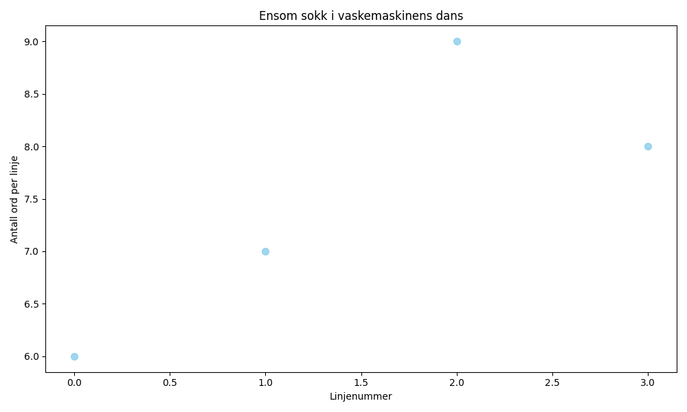

En ensom sokk i vaskemaskinens dans, mistet sin partner og all sin glans. Nå drømmer den stille om ull og om fot, mens den venter på mirakler i vaskeromets rot.

import matplotlib.pyplot as plt
import numpy as np
# Dikt
dikt = """En ensom sokk i vaskemaskinens dans,
mistet sin partner og all sin glans.
Nå drømmer den stille om ull og om fot,
mens den venter på mirakler i vaskeromets rot."""
# Generer data basert på diktet
# Antall linjer i diktet
n_lines = len(dikt.splitlines())
# Generer x-verdier (linjenummer)
x = np.arange(n_lines)
# Generer y-verdier (antall ord per linje)
y = [len(line.split()) for line in dikt.splitlines()]
# Tegn en scatter plot
plt.figure(figsize=(10, 6))
plt.scatter(x, y, s=50, c='skyblue', alpha=0.8)
# Legg til tittel og akseetiketter
plt.title('Ensom sokk i vaskemaskinens dans')
plt.xlabel('Linjenummer')
plt.ylabel('Antall ord per linje')
# Juster layout for bedre lesbarhet
plt.tight_layout()
# Lagre figuren
plt.savefig(output_path)execution_ok=True fallback_used=False image_ok=True